June 7, 2024
何もかも嫌になって逃げたくなったという話
何もかも嫌になって逃げたくなることってありますよね。（唐突）
私事ですが、5月GW明けからずっと激務でした。
というか、去年の12月あたりからずっと、精神的にこたえる仕事をやり続けていました。
そりゃあもうね、色んな事を放り出して逃げたくなりますよ。
そうした時にどうするか。私は、俗世を離れて旅に出ます。
◆芝桜と星を求めて
春から夏に変わるこの時期、見ごろになる花はいくつかあります。
その中でも個人的に芝桜が好きです。
一輪は小さくささやかな花ですが、それらが集まると見事なものです。
それとこの時期、夏の星座が夜の深い時間に見ごろになります。
やはり深夜の方が街の明かりも少なく、空が暗くなるので、星を眺めるにはもってこいです。
梅雨に入る前に、この2つを堪能しておきたい。
そこで旅行先に選んだのが愛知県茶臼山です！ 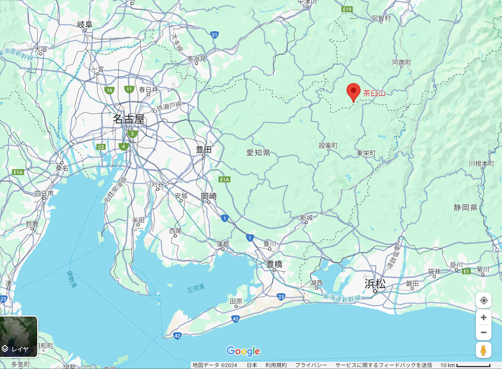
◆楽しかった山道、怖すぎた山道
↑地図の通り、長野と愛知の県境。
御想像通り、山の中です。
公共交通手段など皆無、当然自家用車での移動となります。
（一応、今回泊まったお宿には送迎サービスがありますが…それでも最寄り駅から1時間）
ならばもう運転するっきゃないですね。
＞＞＞ ヒャッハッー！！！((((*’▽’)))) ＜＜＜
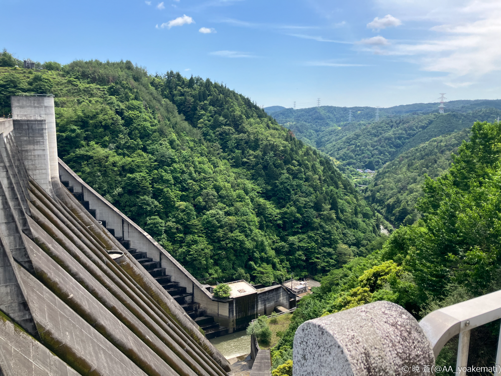
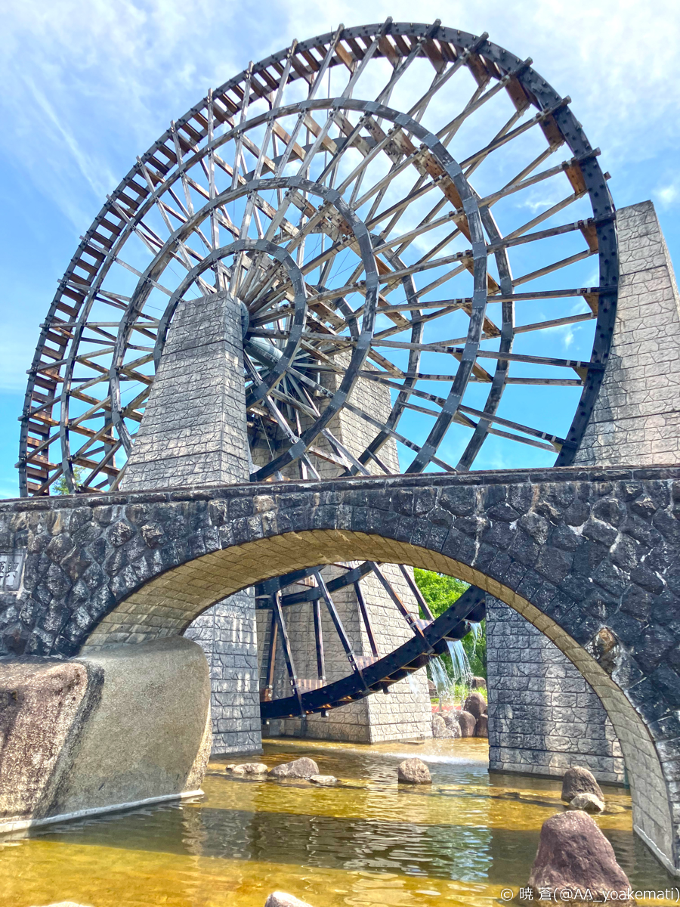
まさにドライブ日和、最高！
途中、ダムを見つけて寄り道。
でっかい水車を見つけて寄り道。
楽しい。楽しすぎる。
…と思えていたのはここまででした。
この後、整備されていない山道を1時間走る羽目になったのです…
（残念ながら写真はないですけど、1車線の酷道をずっと走っていました。対向車が来るたび「詰んだ…」ってなって譲り合ってました。）
◆愛知で一番「高い」お宿
車で走ること数時間、到着したのは「休暇村 茶臼山高原」さんです。
愛知で一番「標高が高い」お宿に泊まってきました。
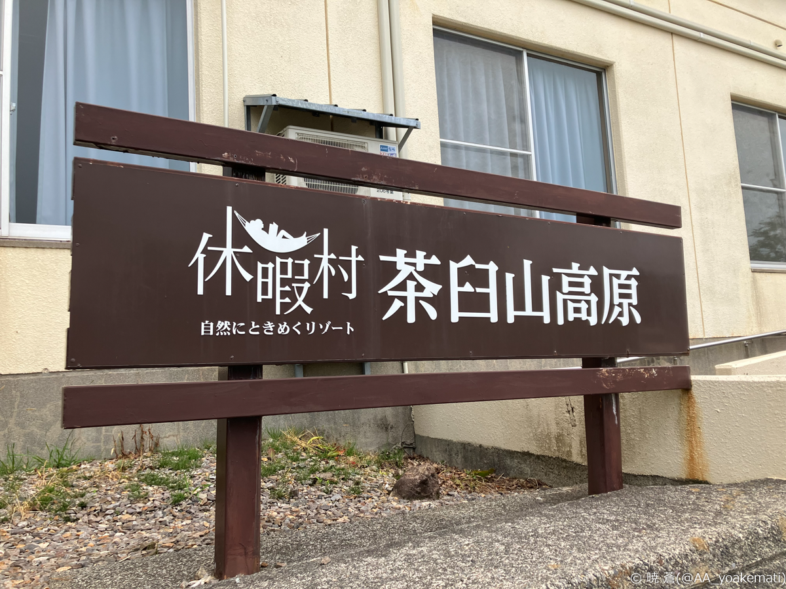
◆肝心な場面で天候に見放される
お宿の真横に今回の目的のひとつだった、芝桜の丘がありました。
そこまではスキー用のリフトに乗って約5分～10分ほどの道のりだったのですが…
おや…
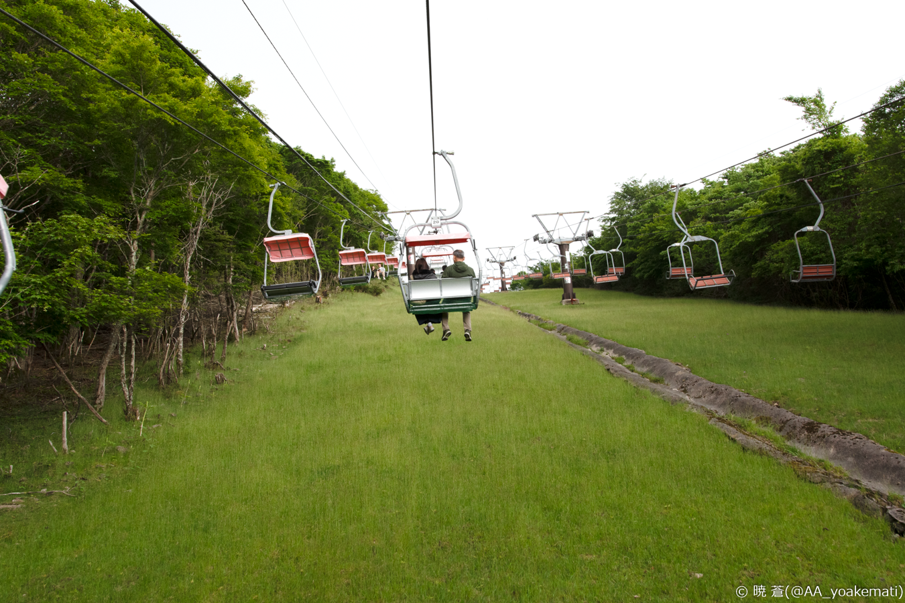
おやおや…
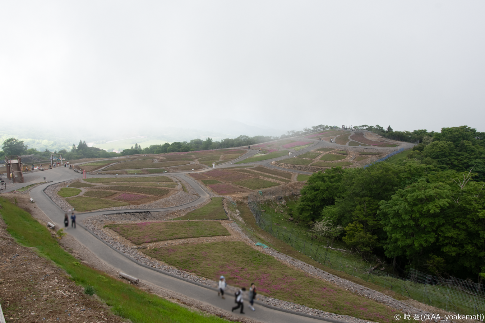
ない！芝桜ないよ！
どうやら、訪れる2日前に大雨が降ってほとんどが散ってしまったとのこと。
肝心なタイミングで天候に恵まれない。
空も高原に着いた瞬間に曇り始めたし、なんなの…
いや、まだ夜があるし！星空が見えれば実質勝ちだし！
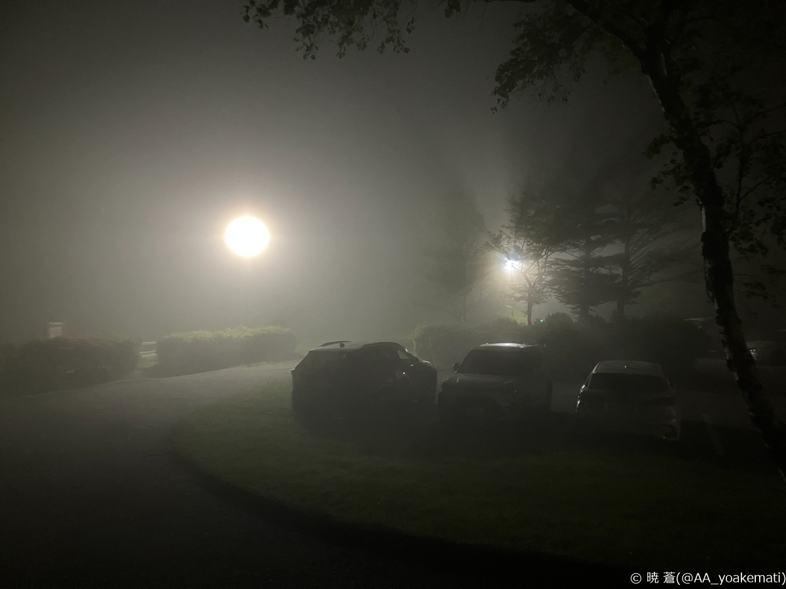
これでもか、というほど霧に包まれてました、とさ。
◆聖地巡礼失敗したオタク
茶臼山高原への旅行は5月頭から予約してたんですが、5月中旬のRoselia名古屋公演で紹介されたこともあって、予期せぬ聖地巡礼じゃんと心躍ってました。
満天の星、見れていれば、さぞかし綺麗だったんだろうなぁ…
天候ばっかりはなぁ、1か月前の予約段階ではどうしようもないしなぁ…
いつか絶対リベンジしたいです！
↑の霧に包まれた写真の通り、お宿から出たところは電灯がかなりきつめに光ってます。
深夜の星空メインで訪れるのであれば、コテージ泊もあるので、そちらにしたほうがいいかもです。
（お宿の玄関は22時ぐらいに施錠されるので）
◆静かでいいとこ 茶臼山高原
私の天気運が足りなさすぎるだけで、茶臼山高原は良いところでした！
静かだし、涼しいし、空気は澄んでいるし
よく晴れた日に、高原に寝っ転がって本でも読めたら最高ですね。
【ギリギリ残っていた芝桜】 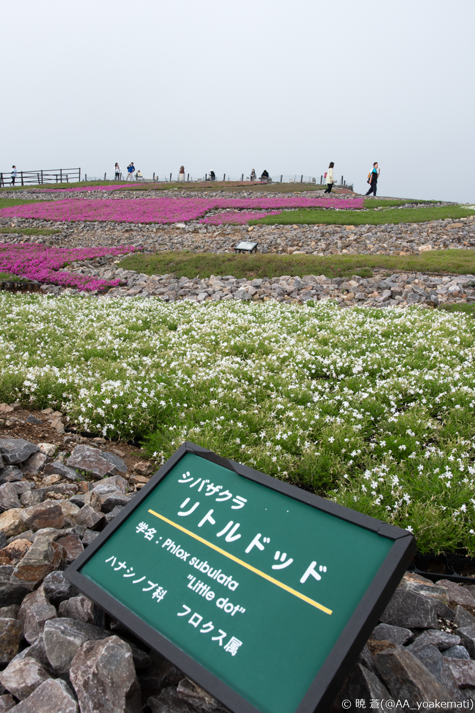
【たぬき】 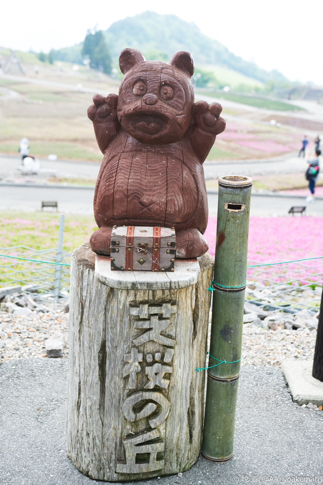
【高原近くの清流】 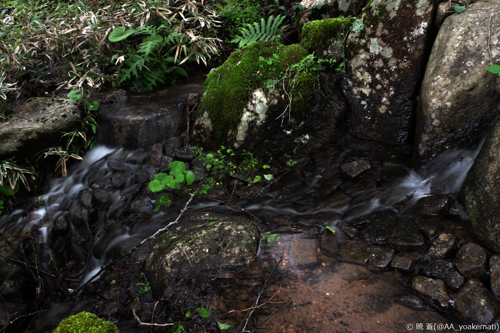
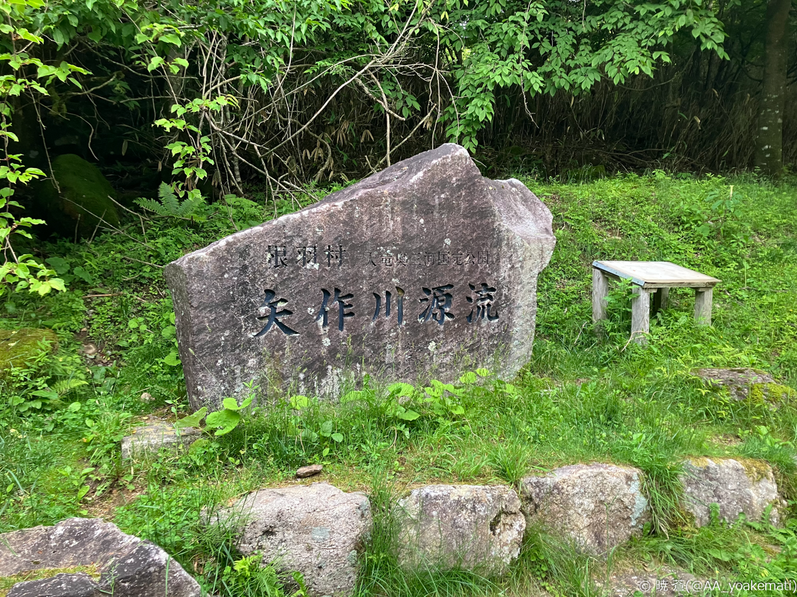
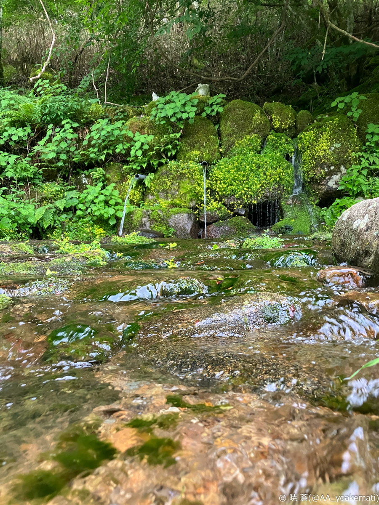
【静かな湖畔】 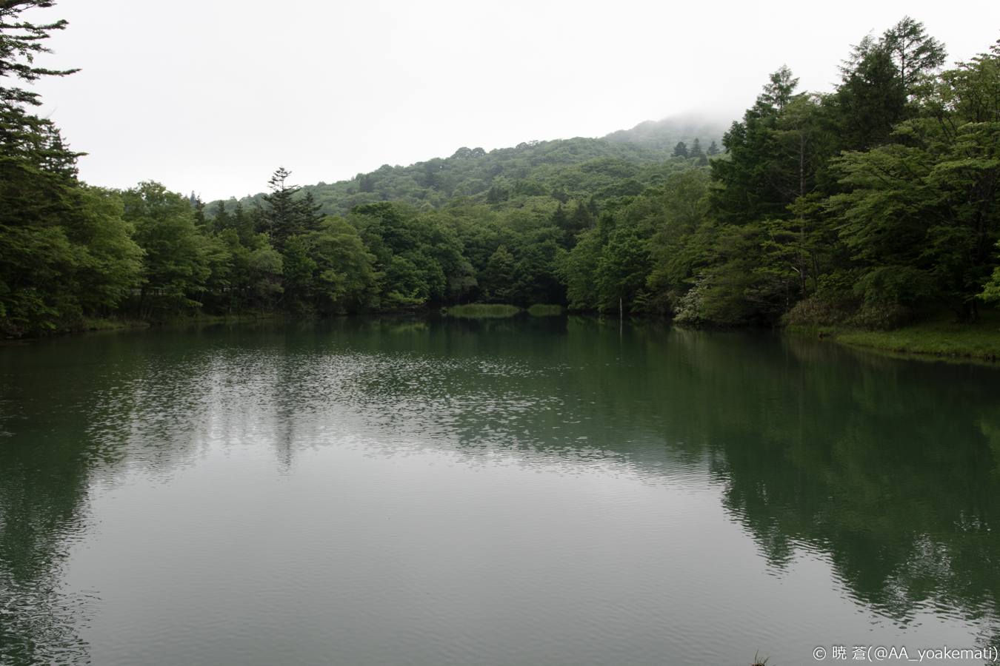
それでは、また次回の更新まで、さようなら。
【2024/06/07 暁 蒼】